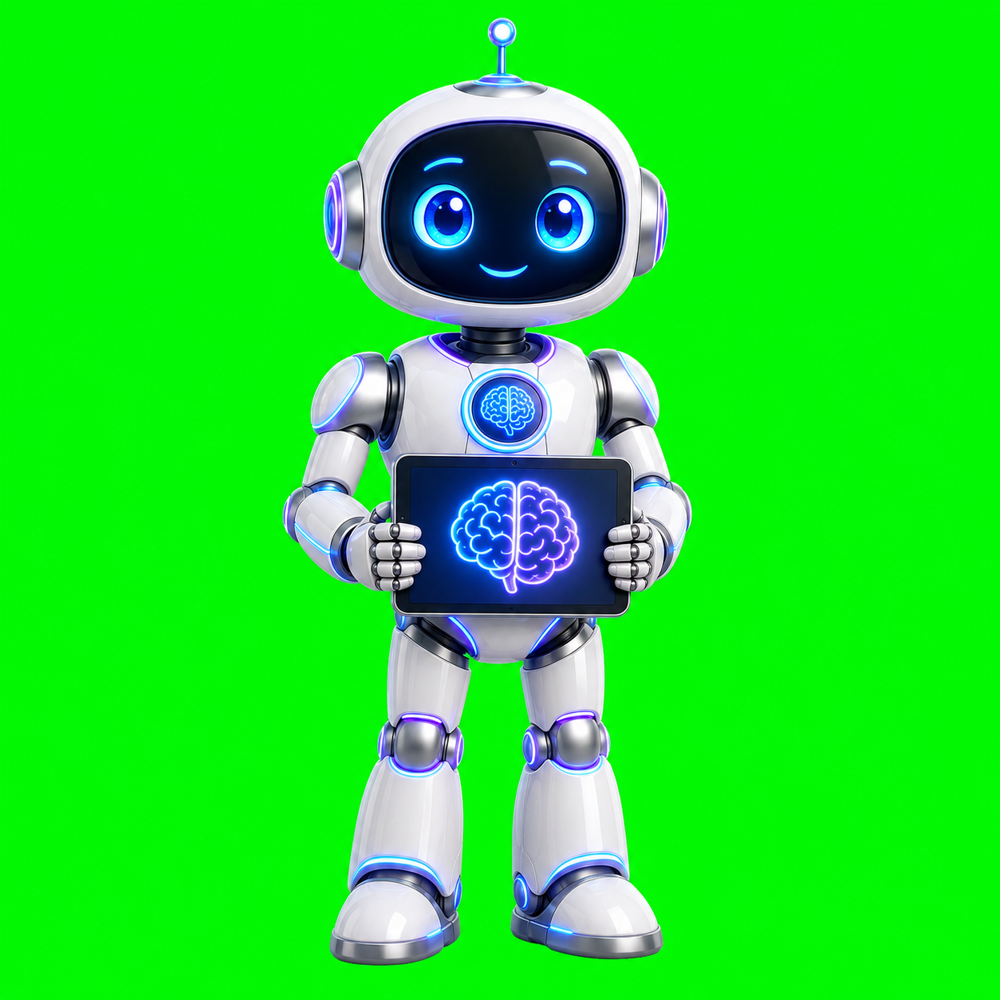
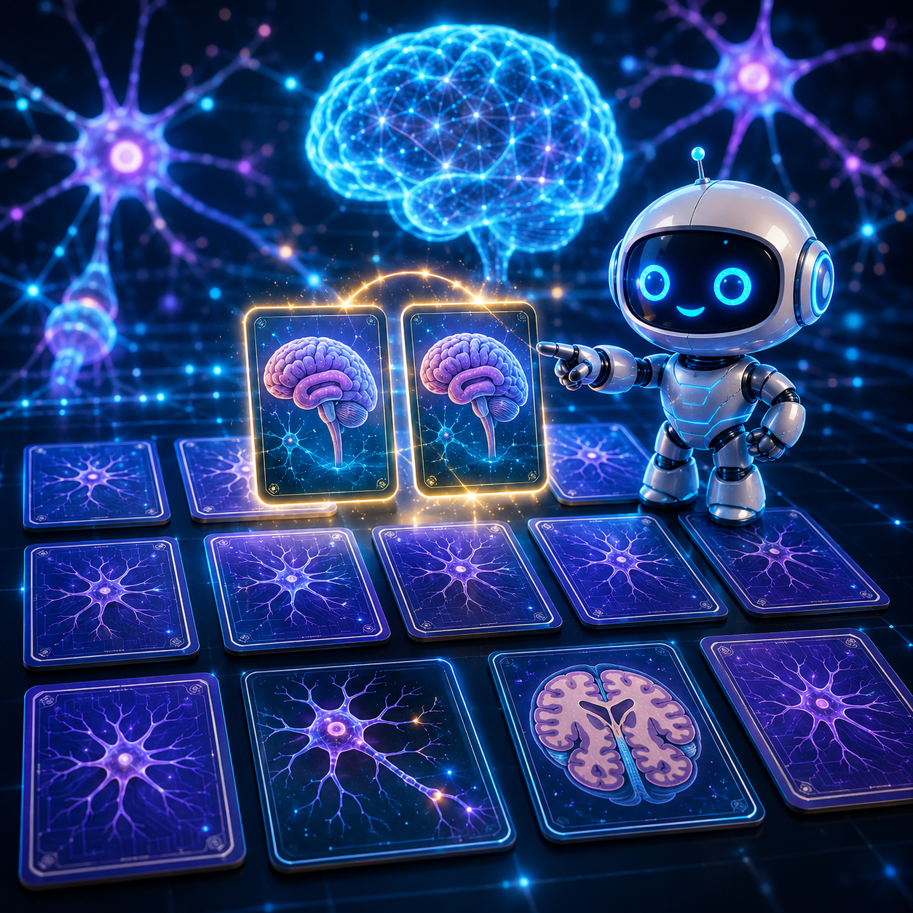
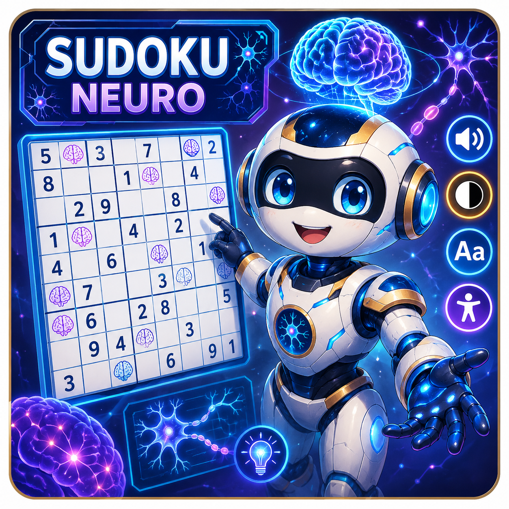
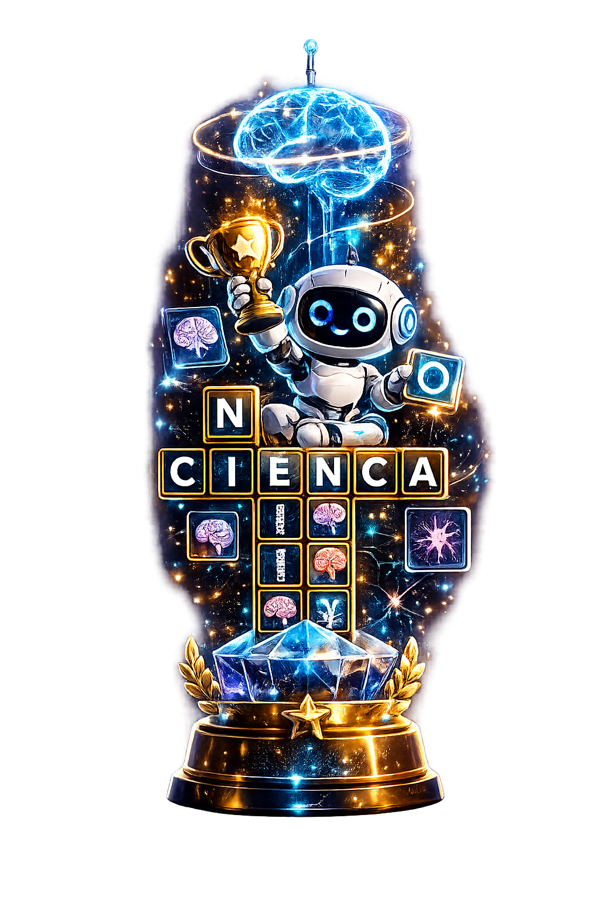
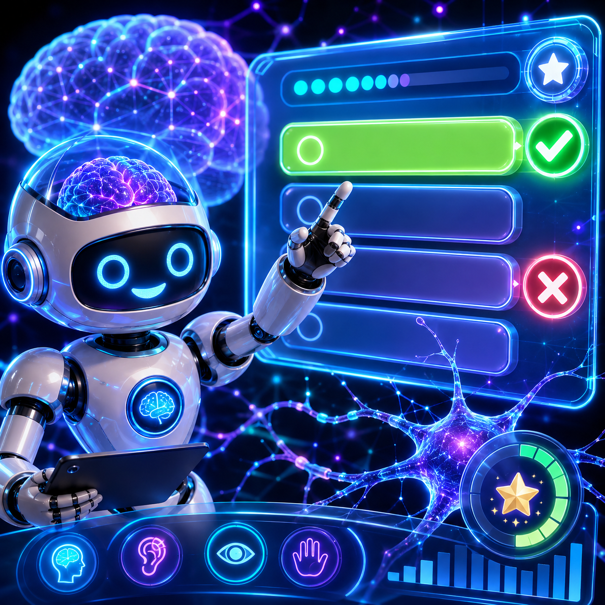
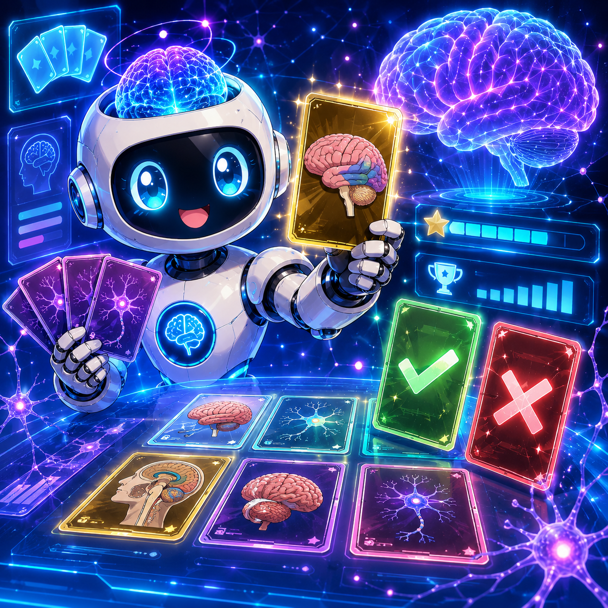
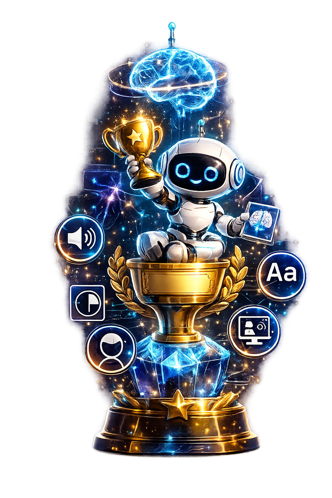

Criar conta no GitHub
O aluno cria uma conta gratuita para hospedar o jogo.
Uma trilha guiada para criar conta no GitHub, organizar pastas, gerar o HTML do jogo escolhido, buscar sons, publicar como PWA e produzir relatório científico.
Este aplicativo foi feito para guiar o aluno passo a passo. A proposta é que o grupo saia da ideia inicial e comece a montar um aplicativo real.
Siga os cards em ordem. Cada card representa uma etapa real do projeto.
O aluno cria uma conta gratuita para hospedar o jogo.
O aluno monta a estrutura correta: HTML, manifest, service worker e assets.
O aluno cria ou baixa imagens com os nomes exatos e coloca em assets/img.
O grupo escolhe memória, sudoku, cruzadas, quiz ou cartas educativas.
O app gera um prompt específico para o jogo escolhido.
O aluno busca sons curtos, suaves e opcionais para o público 60+.
Usar manifest.json, sw.js e ícones para instalar no celular.
Testar no celular, tirar prints e gerar PDF científico.
O HTML não guarda imagens, sons ou ícones dentro dele. Ele aponta para os arquivos. Por isso, o nome e o caminho precisam estar corretos.
Aula5-PWA/
├── index.html
├── manifest.json
├── sw.js
└── assets/
├── img/
│ ├── fundo-neuro.png
│ ├── robo-neuro.png
│ ├── capa-neuro.png
│ ├── memoria-neuro.png
│ ├── sudoku-neuro.png
│ ├── cruzadas-neuro.png
│ ├── quiz-neuro.png
│ ├── cartas-neuro.png
│ └── trofeu-neuro.png
├── audio/
│ ├── clique.mp3
│ ├── sucesso.mp3
│ ├── erro.mp3
│ ├── vitoria.mp3
│ └── ambiente.mp3
└── icons/
├── icon-192.png
└── icon-512.png
robo-neuro.png é diferente de Robo-Neuro.png. Letras maiúsculas e minúsculas fazem diferença.Substitua os arquivos vazios por imagens reais com os mesmos nomes. As imagens dos cards podem ter 1024x1024. O fundo pode ter 1920x1080. O robô deve ser PNG transparente.
Fundo geral imersivo do app. Tamanho sugerido: 1920x1080.

Robô flutuante assistente. Ideal: PNG com fundo transparente.
Capa inicial da Semana 5. Tamanho sugerido: 1024x1024.

Imagem do card para jogo da memória.

Imagem do card para sudoku.

Imagem do card para palavras cruzadas.

Imagem do card para quiz.

Imagem do card para cartas educativas.

Troféu ou imagem de conclusão.
Escolha o tipo de jogo do grupo. O Neuro Guia vai gerar um prompt específico para pedir à IA um index.html completo.
10 imagens diferentes, cada uma com par. Total: 20 cartas.
Números grandes, sem tempo obrigatório, dicas e verificação.
5 a 8 palavras, dicas curtas e letras grandes.
5 a 10 perguntas, alternativas grandes e explicação simples.
Cartas com imagem, pista, conceito e revelação de resposta.
Use sons curtos e suaves. O áudio deve ajudar, não incomodar. Sempre permita desligar som ambiente.
Bom para efeitos gratuitos como clique, vitória, alerta e música leve.
Ótimo para sons curtos de interface, jogos e pequenos efeitos.
Biblioteca enorme. Confira a licença antes de usar.
Tem muitos efeitos. Pode exigir cadastro gratuito.
O grupo pode criar vozes, palmas, feedbacks e sons próprios.
clique.mp3 → botão pressionado sucesso.mp3 → acerto ou etapa concluída erro.mp3 → tentativa incorreta vitoria.mp3 → finalização do jogo ambiente.mp3 → música de fundo opcional
Um PWA é um site que pode ser instalado no celular como aplicativo.
Este app já registra o service worker para funcionar como PWA.
navigator.serviceWorker.register("sw.js")Este app possui fonte ajustável, modo escuro, alto contraste, botões grandes, textos alternativos e integração com VLibras para apoio em Língua Brasileira de Sinais.
O VLibras aparece na lateral da página. Ao publicar online, ele permite tradução de conteúdos para Libras.
Preencha o que souber. Depois clique em Neuro Guia me ajuda para completar os campos vazios com linguagem acadêmica simples.
Estou aqui para orientar a Semana 5. Posso abrir a jornada, gerar prompts e preencher o relatório científico com exemplos.